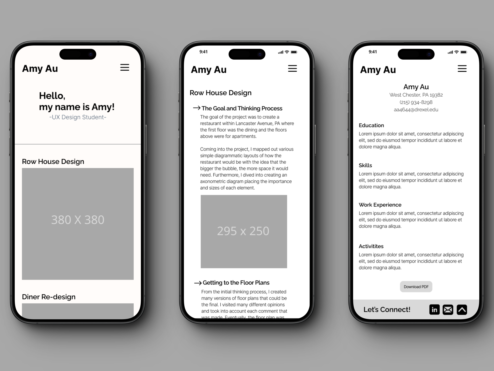
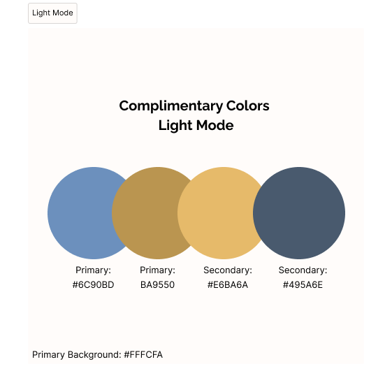
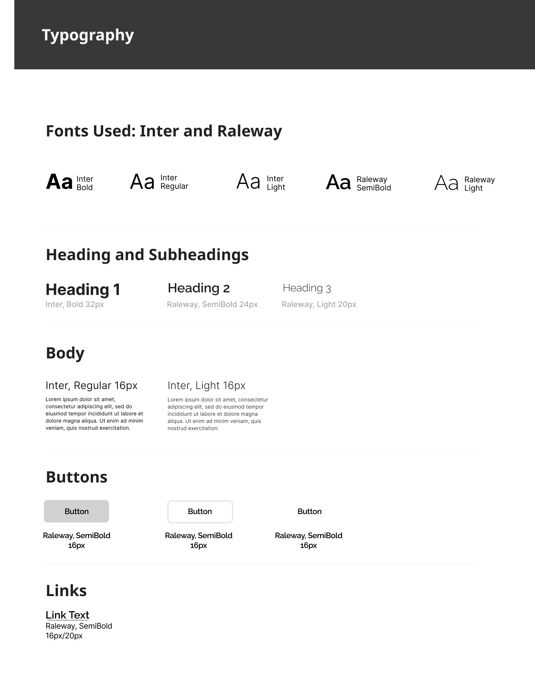

The Goal
The goal for this project was to learn the basics of HTML and CSS to produce a mobile portfolio. Coming into this project, I had never touched code before so this was completely new to me. This was also my proper introduction to the realm of UX/UI design so ideating in this manner was also new to me.
Ideation Stage
To begin the project, I planned out a wireframe that would allow the user to easily navigate through my website. I created a simple one-column design that was structured in a neat, orderly manner.
After gathering other’s opinions and fixing minor details, I moved on to the color palette of my site creating a light mode palette. It showcases a color theme of complementary colors: blue and yellow. I felt that these were calming colors visually but that also represents my personality.
With the wireframe and color palette now decided, I began to plan out my typography. To not confuse the user or overwhelm them, I stuck with only two different fonts that were still harmonious together.
Final Product
For the final product, I mostly coded it to the way I wireframed it. However, my color palette and aesthetic did change. As I was creating my site, I felt that it was very dull and was not eye-catching so I played around with my color palette and theme for a while. After much deliberation, I ended with a sky-blue theme for my portfolio. I had a lot of issues while coding my project as I had never touched code before. However, I learned a lot about it through this project that I will be taking onwards for my future projects.